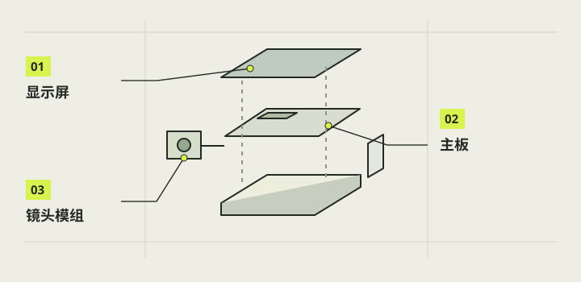

认识零件
把零件按功能认清，后面的接线和故障定位才不会混乱。本样机以 Raspberry Pi 3B+ 运行系统与程序，以 Camera Module 2 采集画面，4.3 英寸 DSI 触屏负责显示和输入。供电、快门拉杆与电源按钮各有独立职责；灯环是按钮上的另一条电路，不能与按键触点混用。

本章完成目标
- 认出主板、镜头、屏幕和电源接口
- 分清两只实体控件与按钮灯线
- 建立已拥有、待核和按需采购清单
开始前准备好
- 已完成第 01 章的工作台准备
- 手头有实物或清晰型号照片
- 所有电源已断开
- CSI
- 主板连接摄像头的高速排线接口，本项目接 Camera Module 2。
- DSI
- 主板连接显示屏的排线接口，本项目接 4.3 英寸触屏。
认出主板
从板上标识与接口核对 Raspberry Pi 3 Model B+：Micro USB PWR IN 是本样机的供电入口，CAMERA 与 DISPLAY 是不同排线座，40 针排针另供屏幕电源和低电流控制信号。记录实际板型，别只凭树莓派外形猜版本；若换成别的主板，供电接口、排线和针脚表都要重查。
注意 / GPIO 是 3.3V 逻辑，不能把 5V 电源脚当信号输入。
核对相机模组
核对 Camera Module 2 包装与模组型号。本项目的传感器是 Sony IMX219，官方规格为 8MP、3280×2464；现有包装标 fixed-focus。摄像头排线要与 Pi 3B+ 的 CAMERA 接口匹配，镜头端、排线宽度及接点朝向以实际连接器和对应图核对，不把屏幕的 DSI 排线挪来试。
注意 / 不要为了“自动对焦”采购不属于 CM2 的电机或承诺软件调光圈。
核对显示组件
屏幕型号是 Waveshare 4.3-DSI-TOUCH-A，硬件分辨率 480×800。它同时需要 DSI 图像连接和独立 5V/GND 供电线；项目实物为 Pi 3B+ 对应的 15 针 DSI 排线。屏幕旋转、触摸坐标和顶部观看角度是另外三件事，要在通电后分别验证。
注意 / 不同 Waveshare 屏幕和 Pi 5/CM 系列的 22 针线不能直接套到本机。
分清供电与控件
基础外接测试曾使用 PB721 充电宝与 USB-A 转 Micro USB 线；后续买了标称 5V、2500mAh、3A 的 Micro 款电池包作内置样品。两者不是同一件，当前结构应以实际选用电池尺寸核对。相机只有一个自复位拍照拉杆和一个自复位电源按钮；按钮黄黑是 NO 触点，红白是白灯 LED 引线。
注意 / 商品标称 3A 和“边充边用”不等于整机供电稳定或无缝切换已通过。
辨认结构与散热件
外壳、盒架、转子和外柄属于机械结构，开关金属杆属于电气元件；打印件碰到金属杆的方向要靠试装确认。已有两块金属散热片与蓝色片材照片，但蓝色片是否是自粘导热胶、尺寸和装壳净空未确认。先按件贴标签，把结构候选与已装主板分开保存。
注意 / 未确认固定方式前，不把金属散热片松放到可通电主板上。
完成后，逐项打勾。
勾选帮助你记录进度，不代表项目替你完成了实机验收。
遇到问题，从这里排查。
实物接口与教程照片不同
先查板型与屏幕具体后缀，下载该版本厂商连接图；不要压排线或沿用旧针位。
按钮有四根线却只找到两个触点
核对 NO/NO 与 LED+/LED− 标识，断电通断测触点；不要把灯线当开关线。
本项目的实际进展
- Pi3B+、IMX219 和 DSI 480×800 也见 C 的实机环境记录；早期库存台账未包含所有后续实拍更新。
- 处理器散热片只是图文安装方法已交付；用户实际粘贴、导热胶材与最终机壳净空未确认。
资料与核对依据
- 器材台账 · camera-reference/inventory/inventory.md
- 相机实机环境 · camera-project/C-软件/handoff.md
- D 散热片说明 · camera-project/D-控件供电/交付/20261026-处理器散热片安装/说明.md
- Raspberry Pi Camera Module 2 官方资料 ↗
- Waveshare 屏幕资料 ↗
资料核对日期：2026-10-30。不同硬件、系统版本和材料需要重新验证。